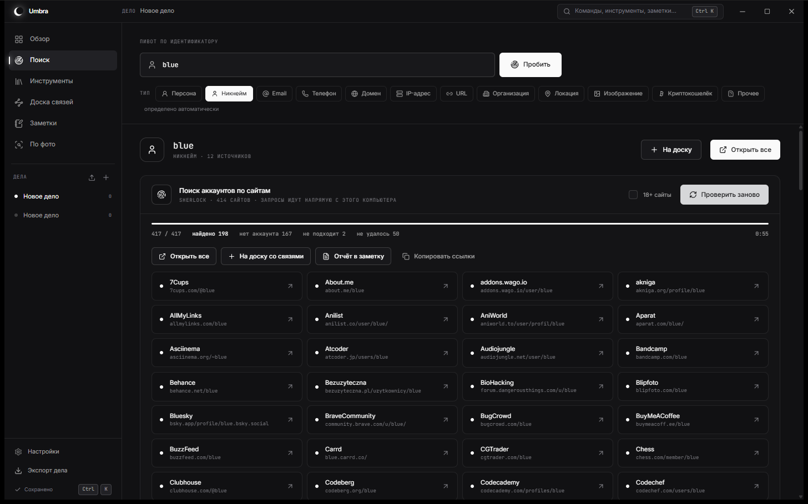
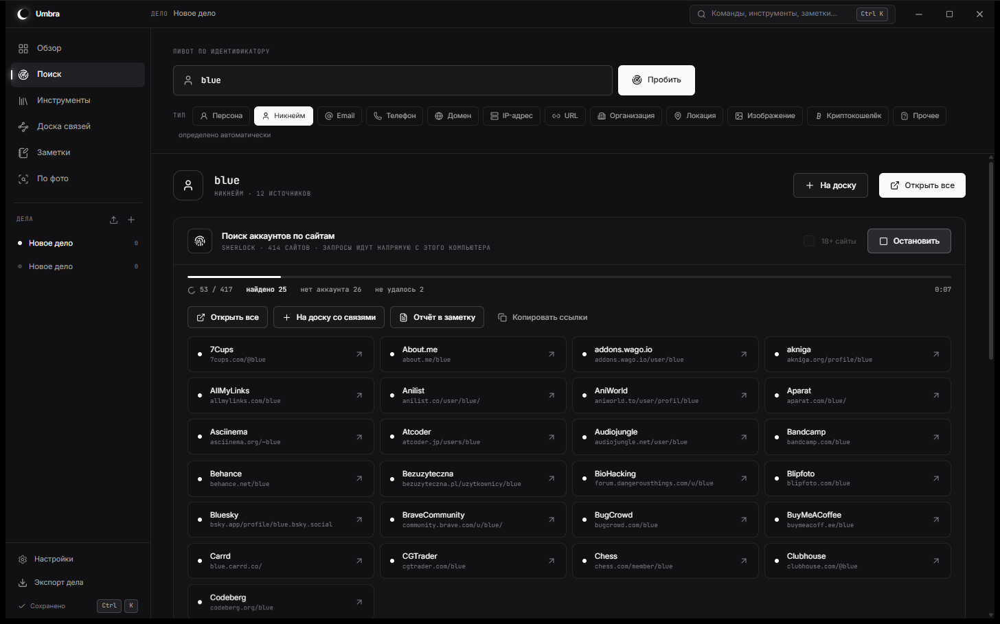

Всё, что видно,
в одном окне.
Umbra — десктоп-приложение для расследований по открытым источникам. Пробивайте никнеймы, email, домены и IP, связывайте находки на доске и ведите заметки. Всё хранится только на вашем компьютере.

Инструменты расследования, собранные в одну систему
Каждый раздел вызывается с клавиатуры, а палитра команд Ctrl K доберётся до чего угодно: объекта, заметки, дела или настройки.
Обзор Ctrl 1
Карта дела в виде живой галактики: объекты становятся звёздами, связи — созвездиями.
Поиск Ctrl 2
Пивоты по 12 типам данных с автоопределением: никнейм, email, домен, IP, телефон, криптокошелёк.
Инструменты Ctrl 3
Каталог из 94 ресурсов в 15 категориях по мотивам OSINT Framework, с фильтрами и избранным.
Доска связей Ctrl 4
Граф сущностей: перетаскивание, подписи связей, трансформы прямо из узла и режим 3D.
Заметки Ctrl 5
Markdown с вики-ссылками [[…]], обратными ссылками и графом заметок.
По фото
Обратный поиск изображения: Google Cloud Vision внутри приложения, Lens, Яндекс, Bing и TinEye в браузере.
Сотни сайтов за минуту
Встроенный движок на основе Sherlock Project проверяет, где зарегистрирован никнейм. Результаты появляются по мере ответа сайтов, а найденные профили ложатся на доску вместе со связями.
- Правила сайтов совпадают с Sherlock, базу можно обновить с GitHub в один клик
- Распознаёт защиту от ботов и лимиты запросов, поэтому они не превращаются в ложные «найден»
- Отчёт сохраняется в заметку, ссылки копируются одной кнопкой

Ваше дело никуда не улетает
Umbra работает без аккаунтов и серверов. Данные расследований не покидают компьютер, а ссылки открываются в вашем браузере вместе с вашими сессиями и настройками OPSEC.
Локальная база
SQLite в папке приложения: автосохранение, транзакции, проверка целостности при запуске.
Резервные копии
Ежедневно и перед каждой рискованной операцией. Хранятся последние 15 копий.
Ключи в системе
API-ключи хранятся в Windows Credential Manager, а не в базе и не в экспорте.
Экспорт в JSON
Дело, настройки и память выгружаются в файл, который можно перенести на другой компьютер.
Войдите в тень
Скоро здесь появится лаунчер Umbra для Windows. Он установит приложение и будет сам его обновлять.